Nyzo version 596 (commit on GitHub) introduces the CycleDigest class.
This version does not affect operation of any run modes significantly. It lays the groundwork for substantial verifier improvements.
The largest remaining performance problems of Nyzo are related to management of blocks. Consider the possibility that Nyzo begins processing transactions as a sustained rate of 1,000 per second. This would be 7,000 transactions per block. At the current cycle length of 2,124, about 8,500 blocks remain in memory in BlockManager. This would mean that about 60,000,000 transactions would be in memory. This is not unmanageable, but it is wasteful. And we can do better.
This version takes a first step into improving the performance of block management with introduction of the CycleDigest class. The class is intended to be a replacement of the CycleInformation class. In this version, the CycleDigest class is only used by a test script. In a later version, CycleDigest will take the place of CycleInformation, and CycleInformation will be removed from the codebase.
The ContinuityState enumeration was removed from the Block class, placed instead in a separate file. This change was made to simplify code structure.
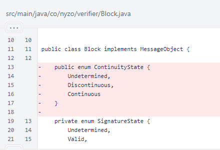In Block.calculateCycleInformation(), the calculation of maximumCycleLength was unnecessarily complicated, and it was actually incorrect in some cases as a result. The incorrect cases were instances when the value was 1 greater than it should have been, and the incorrect value was inconsequential.
The one place this value is used is in the Block.determineContinuityState() method. In this method, the value is used to apply proof-of-diversity rule 2.
// Proof-of-diversity rule 2: Past the Genesis block, the cycle of a block must be longer than half
// of one more than the maximum of the all cycle lengths in this cycle and the previous two cycles.
long threshold = (cycleInformation.getMaximumCycleLength() + 1L) / 2L;
boolean rule2Pass = getBlockHeight() == 0 || cycleInformation.getCycleLength() > threshold;
continuityState = rule2Pass ? ContinuityState.Continuous : ContinuityState.Discontinuous;
In place of the inline calculation while iterating through blocks, the maximumCycleLength value is calculated from the appropriate primaryCycleLengths values.

The wording of rule 2 makes clear the values needed: the length of the current cycle (index 0) and the length of the previous two cycles (indices 1 and 2). Renaming of this field in a future version, to improve code readability, would probably be wise.
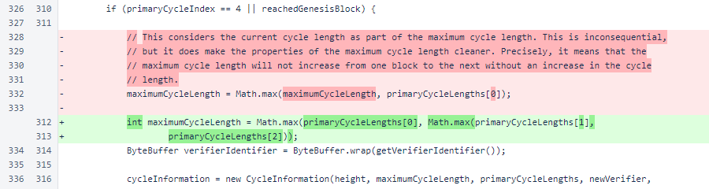The ContinuityState enumeration, removed from the Block class, is now in its own file.
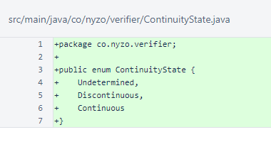The CycleDigest class, as the comment explains, is a drop-in replacement the CycleInformationClass. The list of identifiers eliminates the need to continue looking at blocks to determine cycle properties. To produce the cycle digest for a block, only the cycle digest from the previous block and the identifier of the next block are needed.
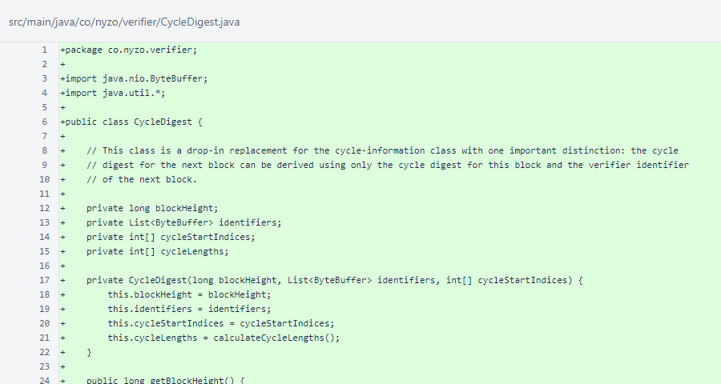The accessors of CycleDigest are exactly those provided by the CycleInformation class.
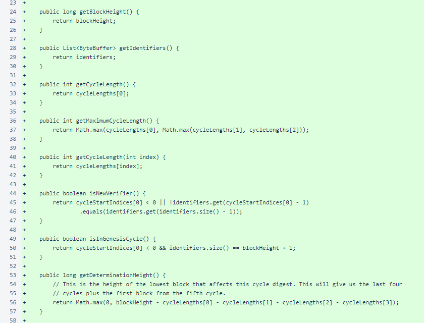The CycleDigest.digestForNextBlock() method adds the next block's identifier to the list of identifiers and calculates cycles from the resulting list. Compare this logic to the logic of the Block.calculateCycleInformation() method. This method is much less complicated, much easier to understand, and the resulting information is the same.
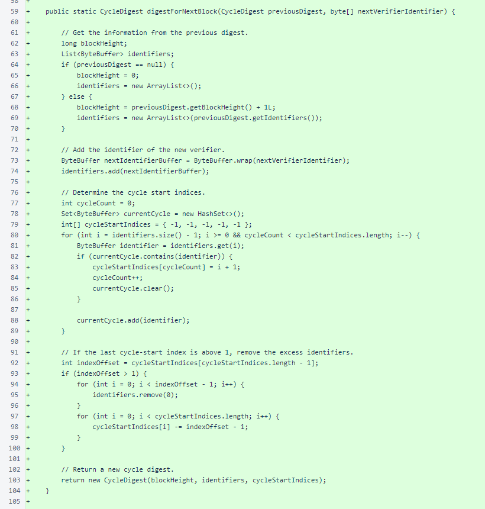The calculateCycleLengths() method is used by the CycleDigest constructor to derive cycle lengths from cycle indices.
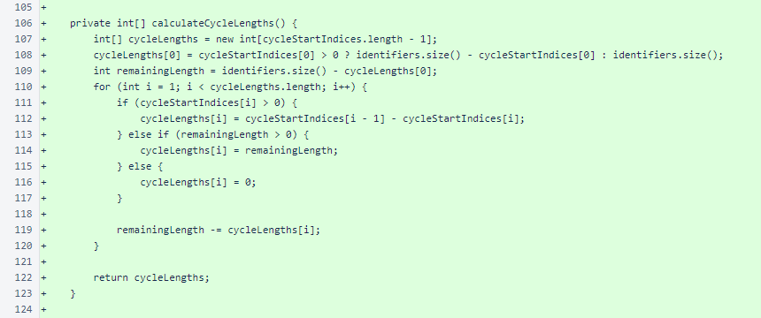The CycleDigest.toString() method presents the same information presented by CycleInformation.toString().
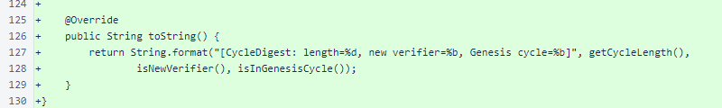The CycleInformation.getWindowStartHeight() method was removed. It was unused.
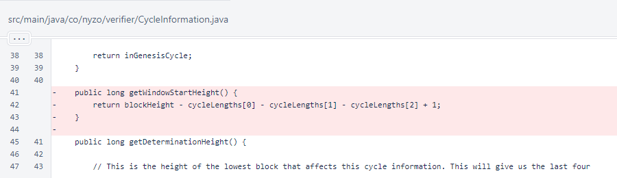In NodeManager, the newNodeIpToPortMap was changed to final. This is a minor change unrelated to other changes in this version.
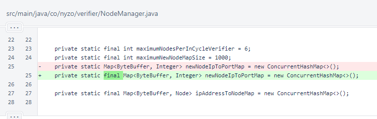The SignatureState enumeration was moved to its own file to simplify code structure.
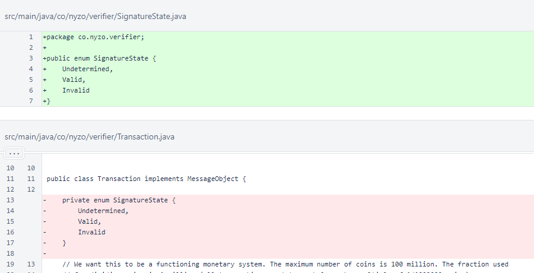In Verifier, references to ContinuityState were updated. This does not affect behavior.

CycleDigestTest loads blocks from consolidated files into the BlockManager. It creates CycleInformation and CycleDigest objects for each block and compares their properties. If any property does not match between the objects, a message is printed and the test exits immediately. Otherwise, the test continues to run as long as contiguous consolidated files are available.

Three overloads of the check method compare values of different types. If any two values are not equal, a message is presented and the program exits.
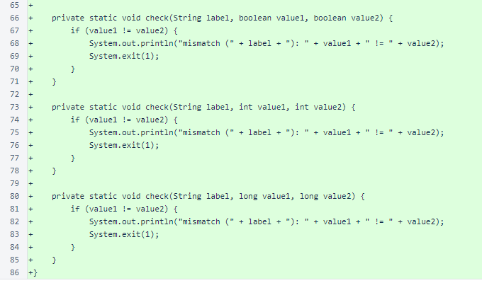